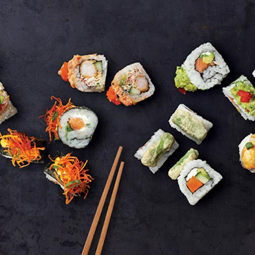

Sushi Rolls
EBI TEMPURA MAKI ROLL (8 piezas) Nori Camarón tempura, espárrago, masago y salsa chipotle. SPICY TORI MAKI ROLL (8 piezas) Nori Pollo teriyaki, con salsa chipotle y tampico. BORA BORA ROLL Salmón empanizado con coco y salsa Bora Bora. Aguacate y Queso Filadelfia. HOUSE ROLL Nori, salsa de habanero y papa crujiente. Pulpo tempura, zanahoria, lechuga, aguacate y cilantro.